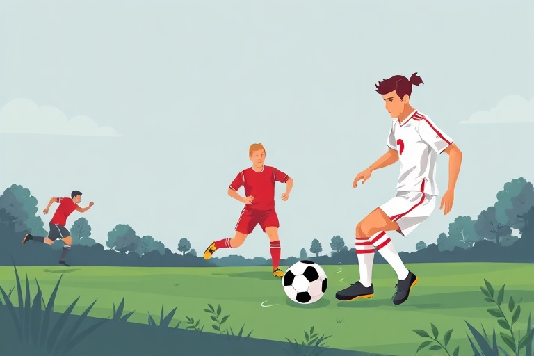

A Beginner's Guide to Football: Core Rules, Essential Skills, and Playing Tips

Category: football | Language: enFootball, widely known as soccer in several parts of the world, is a simple yet exciting game played across the globe. Two teams of eleven players compete on a rectangular grass pitch with the goal of kicking or heading the ball into the opponent's net. A standard match consists of two 45-minute halves separated by a 15-minute break. With the exception of goalkeepers operating inside their own penalty areas, no player on the field is allowed to deliberately touch the ball with their hands or arms.
Learning the boundary rules helps beginners understand how the match flows. When the ball fully crosses the sideline, play restarts with a two-handed overhead throw-in for the opposing team. If the ball travels over the endline without a goal being scored, it results in either a goal kick for the defending team or a corner kick for the attacking side, depending on who touched it last. Players must also learn the offside rule, which states that an attacker cannot be closer to the opponent's goal line than both the ball and the second-last defender when a pass is made to them.
Safety and fairness are maintained through referee calls and disciplinary cards. Physical infractions like tripping, pushing, or holding an opponent grant a free kick to the opposing side. If a defensive foul happens inside the penalty box, the attacking team is awarded a penalty kick from a fixed spot twelve yards away from the goal. Referees show a yellow card as a serious caution, while receiving a red card—either directly for dangerous play or after two yellow cards—results in an immediate ejection from the match, leaving the team with one fewer player.
New players should begin by practicing basic ball control and passing techniques. The most reliable pass uses the inside of your foot, providing direct control and accuracy over short to medium distances. When receiving the ball, practice using a soft first touch to cushion the impact and keep the ball within arm's reach. Dribbling is best learned by taking small, frequent touches using both the inside and outside of your boots, keeping your head slightly raised to watch for nearby defenders.
Shooting and defending are two sides of the game that require patience and correct technique. When shooting, use the inside of your foot to place the ball in the corners for precision, or strike through the center of the ball with your laces for maximum speed and power. On defense, beginners should avoid diving in for quick tackles. Instead, learn to jockey the opponent by staying low on your toes, maintaining a safe distance, and guiding the attacker into tight spaces where they are likely to lose possession.
The most effective way to build confidence on the pitch is by participating in small-sided matches, such as five-a-side games. Smaller formats ensure that every player receives many more touches on the ball than in a traditional eleven-a-side match. Always wear protective shin guards and appropriate footwear for the surface you play on, talk regularly with your teammates during matches, and focus on steady improvements rather than immediate perfection.